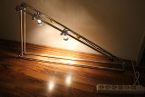
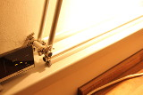
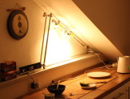

Fig.1: Building
Fig.2: Test
Fig.3: Junctions
Fig.4: Result

Aluminium Tube Lamp von Dennis Salzner ist lizenziert unter einer Creative Commons Namensnennung - Nicht-kommerziell - Weitergabe unter gleichen Bedingungen 4.0 International Lizenz.
Kitchen lamp built from aluminium tubes and other spare parts
What?
A lamp built from spare parts I had in my workshop.
When?
Why?
There is very poor lighting in one corner of my kitchen. It's not much of a problem during the day, but whenever I'm making something to eat in the evening, it is.
Background?
I had all these spare parts and decided to build something out of it (Fig.1).
- The cord from a kitchen mixer, that broke a long time ago.
- The switch from a socket strip, which I had replaced by a relay.
- A cord from another socket strip that had broken.
- Light bulb sockets, which had previously been in the ceiling before I replaced them for a standard lamp.
- Aluminium tubing and hose clamps, which I had intended for use in my CNC mill, but with which I couldn't achieve the accuracy I needed.
It takes quite a few hose clamps. I definitely wouldn't suggest doing this unless you have them left over.
How?
The frame was built in a similar manner as I had planed for my CNC mill. Two hose clamps, one inserted in the other, form a junction which is roughly 90 degrees (Fig.3). Serveral such junctions were used to build the frame. The bulb sockets were attached with hose clamps as well. The rest is wiring it up.
Progress?
This project was completed in under an hour. Then I had to clean up afterwards. But I'm happy with the result (Fig.4).